煙突アスベスト除去
Hi-jet ARC工法
Hi-jet ARC工法とは?
Hi-jet ARC method
Hi-jetARC工法とは、煙突内部のアスベスト含有断熱材を無人で除去する、建築技術審査証明（BCJ）を取得している藤林商会独自の工法です。
まず、煙突筒上部につり下げた「Hi-jetARC除去装置」を、作業員が遠隔操作により降下させます。そして、除去装置を、必要に応じ上昇させながら除去を進めます。
「Hi-jetARCノズルヘッッド」から噴射される超高圧水は、煙突内部のアスベスト含有断熱材を粉砕除去します。
湿潤状況で除去したアスベストは湿った状態ですから、
周囲に飛び散る心配がありません。
除去されたアスベストは、煙突脚部に作られた隔離区域で袋詰めします。危険な煙突内部に作業員が入り込まずに作業ができ、ライニング材もアスベストも全て一工程で除去できる・・・
「安心安全で確実な除去処理工法」は、もはや事実上の標準、ディファクトスタンダードとなりました。
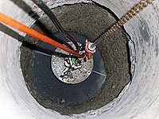
ARC工法
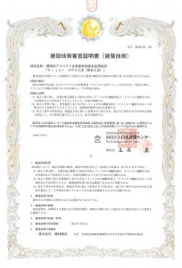
建築技術審査証明を取得
Hi-jet ARC工法の特徴
Features of Hi-jet ARC method
- 煙突内部は無人の遠隔水圧式切削除去。
- 水で除去するのでアスベスト粉じんの飛散が非常に少ない。
- ライナー付煙突断熱材はもとより、石綿セメント円筒などの硬いライニング材も一工程にて除去。
- 煙突内面側のコンクリートの食い込んだアスベスト繊維やジャンカ等劣化部も切削洗浄除去。
- 煙突ドラフト（上昇気流）にまけない負圧の換気回数40回／Ｈを維持。
- 建設当初につぶれて変形した煙突や、屈折部のある煙突も除去可能。
- 隔離区域作業床は建築用防水材での防水養生の為、漏水は無し。
- 建設当初につぶれて変形した煙突や、屈折部のある煙突も除去可能。
- 機械式切削除去に対し振動は皆無に等しく、煙突や建築物にダメージを与えない。
- 除去に要する時間は短時間で済み、工期を大幅に削減可能。
- 煙突径が130ミリから3,500ミリまで広範囲寸法に対応。
- 煙突内部の除去確認は、モニターカメラ等にて遠隔確認。
- ごみ焼却炉併設時に付着したダイオキシン汚染物も同時切削除去可能
- 汚染水は特殊吸水剤等で処理し、除去アスベスト材と同様に袋詰めして放流水は一切なし。
作業イメージをイラストと動画で見る
Work image
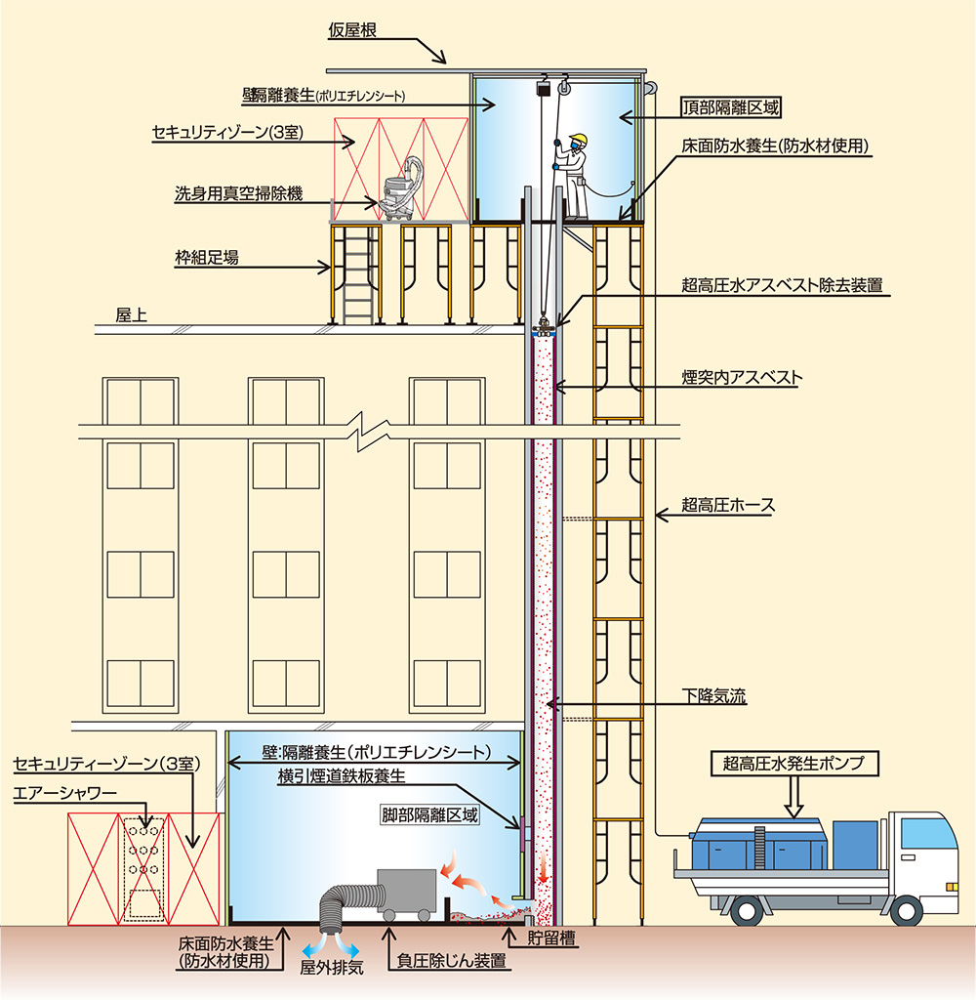
除去処理の手順
flow
除去前
アスベスト処理除去前の写真は下記
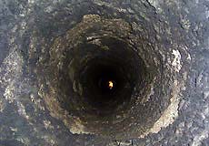
現状調査
断熱材の種類・煙突の長さと直径・損傷度・ごみ焼却炉仕様履歴などを目視確認
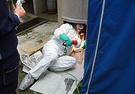
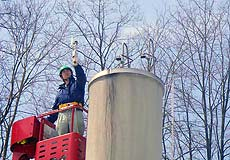
仮設足場の設置
特に、煙突頂部は耐風荷重構造に組み立てする
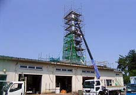
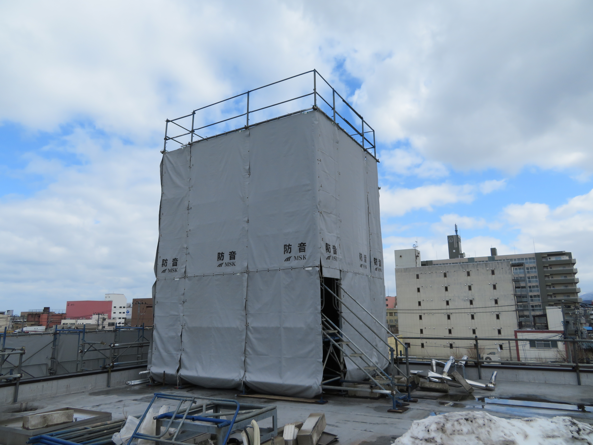
作業床防水及び壁等養生
作業床は、防水シートにより床養生
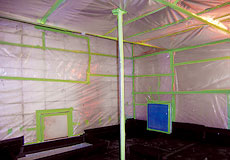
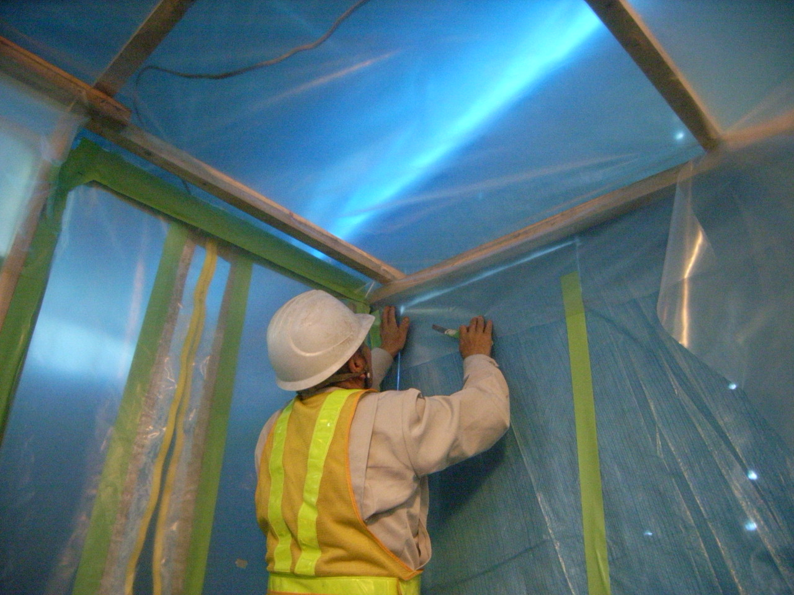
負圧防じん装置・セキュリティ等設置
負圧除じん装置やセキュリティゾーンを設置
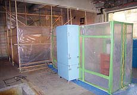
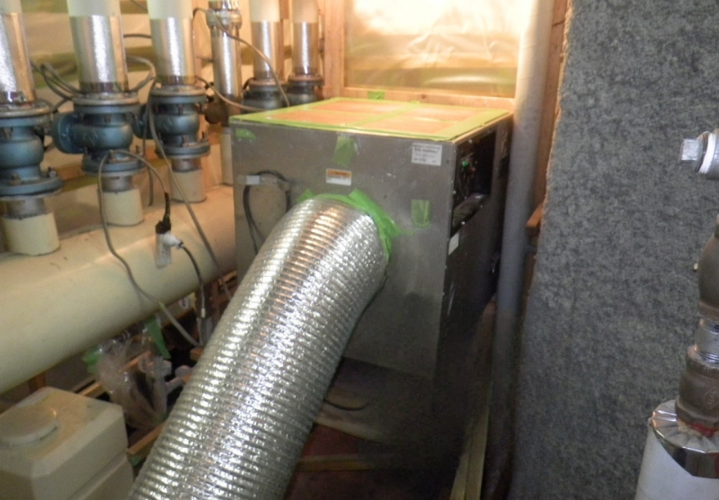
横引煙道等の仮閉鎖
横引煙道を取り外した後、鉄板で封鎖する
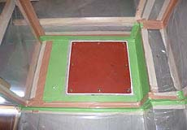
ARC装置取付
煙突頂部の隔離区域上部に、ARC装置を設置する
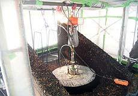
事前湿潤
粉じん飛散抑制剤を専用の装置により充分浸透させる
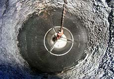
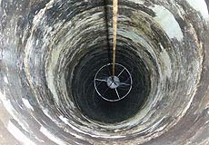
煙突内壁のアスベスト含有断熱材の除去
頂部作業者が遠隔操作により除去スピードと圧力を調整しながら除去
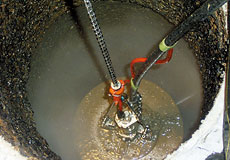
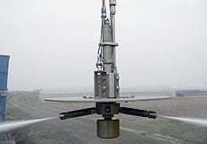
除去後の確認
除去後の煙突内はモニタカメラにより確認し、不備があった場合は再洗浄などを実施する
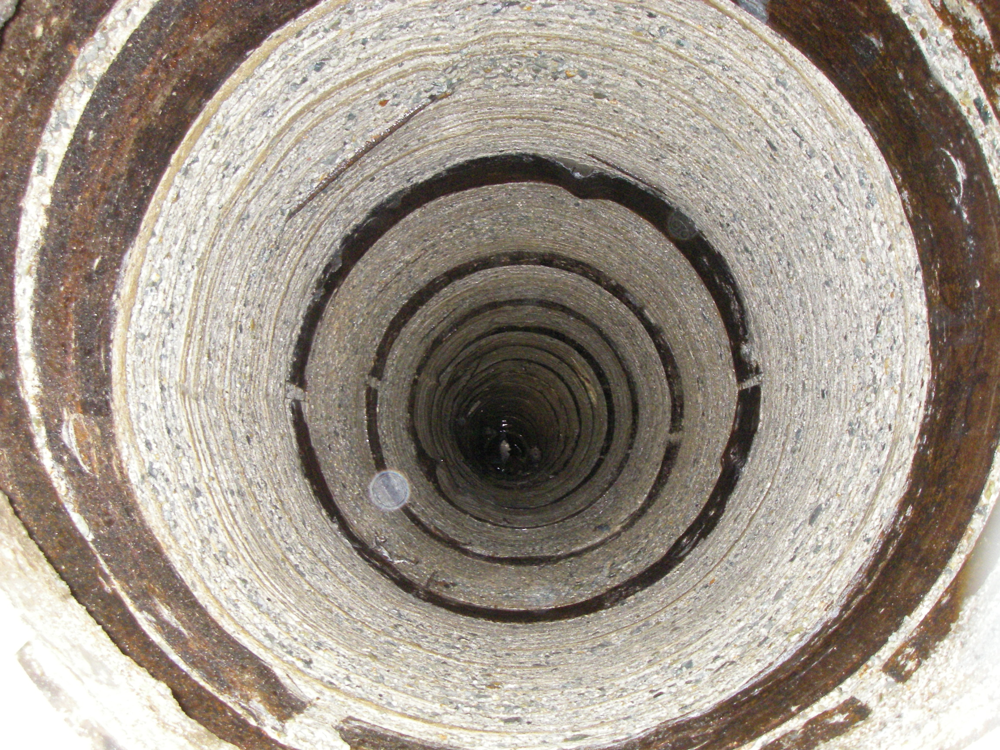
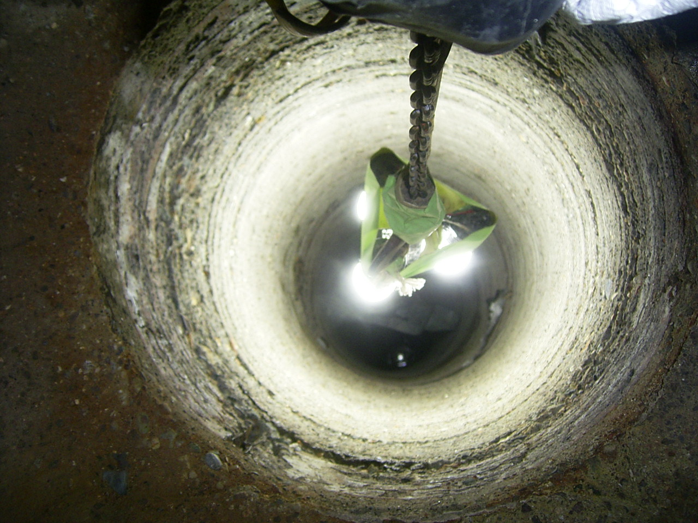
除去物の袋づめ
アスベスト材や余剰遊離水は、特殊吸水性樹脂などを投じて袋づめする
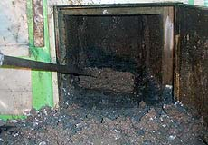
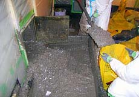
隔離区域内へ→飛散防止剤の吹き付け
区域内清掃後、エアレスにより粉じん飛散防止をする
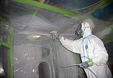
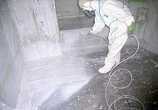
養生撤去および片付け
使用した装置等清掃し、そして養生撤去及び片付けをして完了
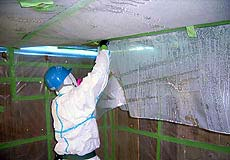
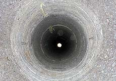
煙突アスベストに関するQ＆A
FAQ
- 堆積物を採取分析してアスベストと確定したら、石綿に関する特殊健康診断で所見のないなおかつ、石綿作業主任者の有資格者でなければ、作業できません。
- 堆丈夫なポリエチレン袋等で２重梱包し、特別管理産業廃棄物管理責任者の下での保管が必要であり、また、運搬及び最終処分は特別管理産業廃棄物として取り扱いしなければなりません。
-
当然、ボイラー（非常用発電機含む）を稼働してはいけません。
無理に稼働すると不完全燃焼でCO（一酸化炭素）中毒事故や、煙突周辺へアスベスト含有断熱材が大量に煙突から噴出してしまい、周辺住民に多大な健康被害を生じる恐れがあります。
- 事業者には、石綿障害予防規則（抄）第１条（事業者の責務）で、石綿による健康障害を予防する必要な措置を講じ、石綿を含有しない製品に代替するよう努めることとされています。 アスベスト含有断熱材が、脚部点検口へ剥落堆積している場合は、周辺作業されている方のアスベストにばく露危険性があり、煙突の所有者は煙突内に使用されているアスベスト含有断熱材の除去等措置を講ずるべきと思われます。
-
工事期間中は、
・仮の煙突を設置し排煙を迂回させること
・アスベスト含有断熱材除去と新設するノンアス断熱材の挿入工法
によって、ボイラーを停止せずに改修する事は可能です。
-
超高圧水を使用した、煙突無人遠隔除去工法があります。
安全に、環境にも配慮した工法です。
しかし、アスベスト断熱材内面に硬質のライナーが使用されている煙突は除去出来ない工法もあるようなので、
煙突のアスベスト断熱材の状態について、事前確認が必要です。
-
できれば、除去処理をして閉鎖が最も望ましいと思われます。
しかし、それができない場合には、煙突頂部を風雨降雪等に耐えられる材質を使用したもので蓋をして、脚部点検口は施錠等で開口出来ない様にします。 また、管理者等が見やすい位置に『頂部封鎖済み！』『煙突内アスベストあり』『再使用時は内部確認注意』とでも明記しておくとよいでしょう。
アスベストによる健康被害
Asbestos Health Effects
-
胸膜肥厚斑
肺の表面や胸郭の内面を覆っている薄い膜を胸膜あるいは助膜といいます。 石綿を吸い込むと、胸郭の内面を覆っている胸膜の広い範囲に線維が増加して、厚くなります。これを胸膜肥厚斑といいます。 胸膜肥厚斑は非常に特徴のある形をしており、石綿以外の原因では胸膜肥厚斑が生じないと云われています。 したがって、胸膜肥厚斑は過去に石綿を吸い込んだことの重要な証拠であると云えます。
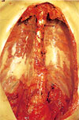
胸膜肥厚斑
（Pleural plaques） -
石綿肺
吸い込まれた石綿は肺に入って、細い気管支や肺胞を刺激して細気管支肺胞炎という炎症を起こします。 この炎症は、治りにくいだけでなく石綿を吸い込むことをやめても進行を続けます。 その結果、肺胞が広い範囲にわたって線維に置き換えられてしまいます。 不治の病で石綿の吸入をやめても病状は進行してしまいます。
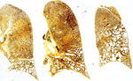
肺の下の方が線維化し、細い気管支が拡張して、蜂の巣のようにみえる -
悪性中皮腫
胸膜や腹膜から発生する悪性新生物を悪性中皮腫といいます。 ガンの仲間ですが、たちが悪く、診断されてから半年以内に死亡することが多く、今のところ治療法もありません。 写真は、胸膜の悪性中皮腫で、上の胸膜は悪性中皮腫によってでこぼこに見え、横隔膜も厚くなっている。 左の肺に悪性中皮腫が転移している。
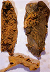
胸膜の悪性中皮腫